Chapter 1 · Part 2 — The Dark Woods
He sighed. “Okay. Let’s get dressed. I’ll meet you at the back door. Be quiet.”
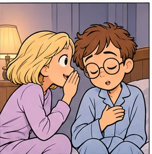
“Yay!” whispered Annie. She tiptoed away as quietly as a mouse.
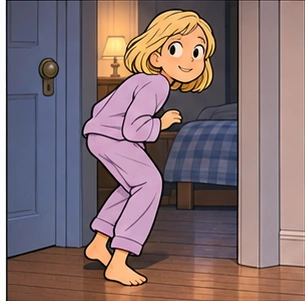
Jack put on jeans, a warm sweatshirt, and sneakers. He tossed his notebook and pencil in his backpack.
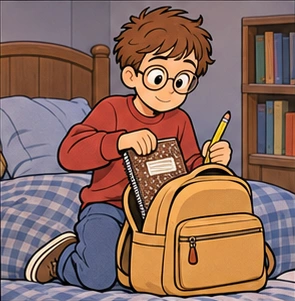
He crept downstairs.
Annie was waiting by the back door. She shined a flashlight in Jack’s face. “Ta-da! A magic wand!” she said.
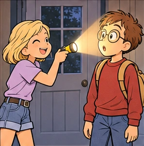
“Shhh! Don’t wake up Mom and Dad,” whispered Jack. “And turn that flashlight off. We don’t want anyone to see us.”
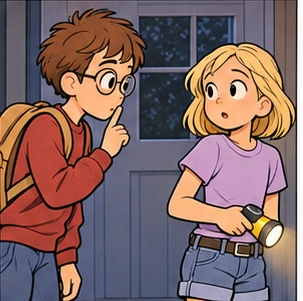
Annie nodded and turned it off. Then she clipped it onto her belt.
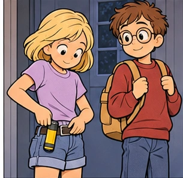
They slipped out the door into the cool early-morning air. Crickets were chirping. The dog next door barked.
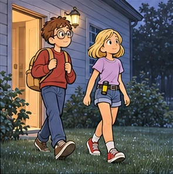
“Quiet, Henry!” whispered Annie.
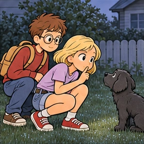
Henry stopped barking. Animals always seemed to do what Annie said.
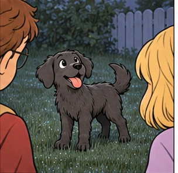
“Let’s run!” said Jack.
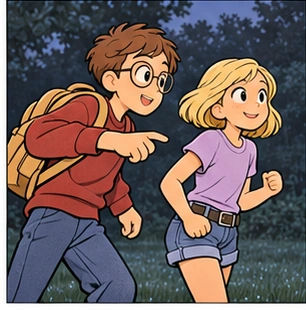
They dashed across the dark, wet lawn and didn’t stop until they reached the woods.
“We need the flashlight now,” said Jack.
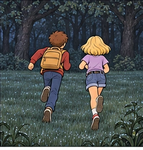
Annie took it off her belt and switched it on.
Step by step, she and Jack walked between the trees. Jack held his breath. The dark woods were scary.
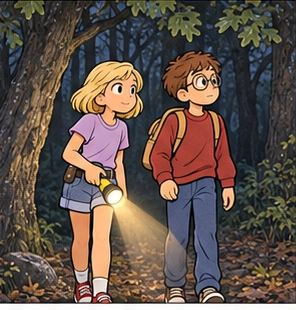
“Gotcha!” said Annie, shining the flashlight in Jack’s face.
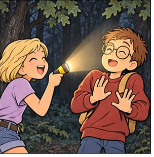
Jack jumped back. Then he frowned.
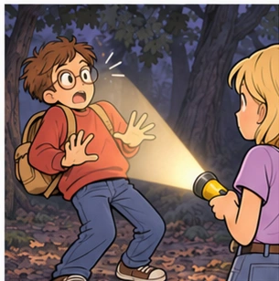
“Cut it out!” he said.
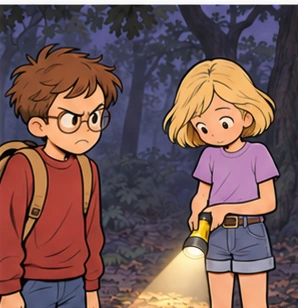
“I scared you,” said Annie.
Jack glared at her.
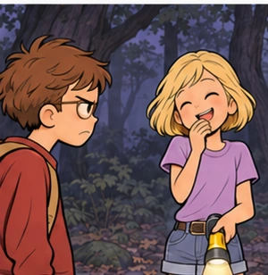
“Stop pretending!” he whispered. “This is serious.”
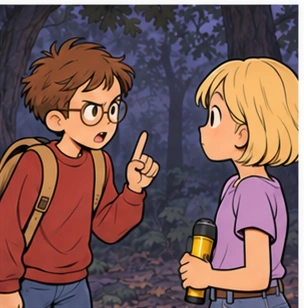
“Okay, okay.”
Annie shined her flashlight over the tops of the trees.
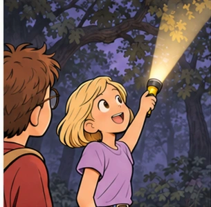
“Now what are you doing?” said Jack.
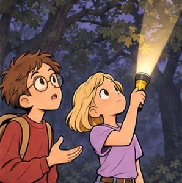
“Looking for the tree house!”
The light stopped moving.
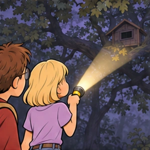
There it was. The mysterious tree house. At the top of the tallest tree in the woods.
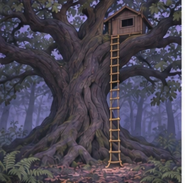
Annie shined her light at the tree house, and then down the tall ladder. All the way to the ground.
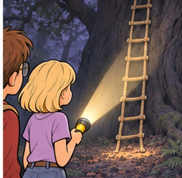
“I’m going up,” she said. She gripped the flashlight and began to climb.
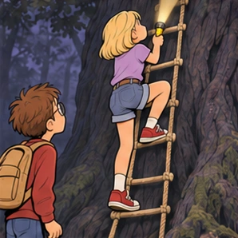
“Wait!” Jack called.
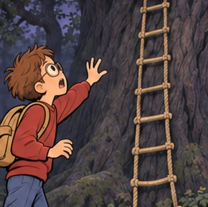
What if someone was in the tree house?
“Annie! Come back!”
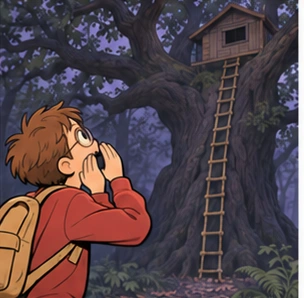
But she was gone. The light disappeared. Jack was alone in the dark.
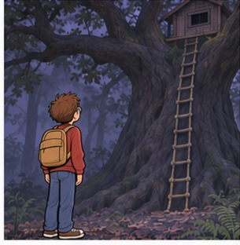